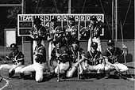

97.10.1（水）
今日から制作デスクとして神村氏が出社。
野崎氏来社。日曜日のカナックス対マイティダックスのチケットをもらう。彼はアメリカまでNHLを見に行くマニアなのである。相変わらず仕事がたて込んでいるようで、北海道に牧場を買う話しは頓挫しているようだ。
97.10.2（木）
社員旅行の日程が11月10日からに決定する。またパンフレットを作らなければならないのか。
演助の石曽根氏が夜の７時前にそっと会社を抜け出し、隣駅の武蔵境にある小さなホールで、ベルリン国立歌劇場のメンバーを中心とした弦楽六重奏のコンサートに行く。値段がなんと1,800円と超お買得。
高畑監督が電車のつり広告の中で見付けた中学校入試の漢字の試験問題に、我こそはと名乗りを上げたスタッフ数人が挑戦するも、たった五問に誰も全問正解者が出ず。問題が難しいのか、スタッフの頭が悪いのか。トホホ…
97.10.3（金）
今日は学校のため、高畑監督は5時頃出社。
鈴木プロデューサーが自慢のモデルガンワルサーPPKに火薬を詰め社内で乱射を始める。それに気づいた高畑監督も「最近のはよくできてますねえ」と言いながら撃ちまくっていた。
来年度、動画部門の新人をいつもの年よりかなり多くとる計画をたてている。
97.10.4（土）
今日は息子さんの結婚式出席のため高畑監督はお休み。
次作へ向け、本格的なCGルームを開設するための大工事がスタートしている。社屋のすぐとなりに2階建てのサーバールームを作り、撮影部とCG部の仕切りも外し、以前絵の具を置いてあった場所にもコンピューターも置く大拡張計画である。最終的な工事完成は来年になる予定。
97.10.6（月）
ゲームセンターにパチンコにと、夜も大忙しの鈴木プロデューサーだが、今日はいつものお相手奥田さんが来ないため、渋る望月さんといざパチンコへ。結果は鈴木プロデューサー4000円の勝ちに対し、望月さんはなんと1万円の負け。望月さんは、もう二度とパチンコには行かないと宣言している。
97.10.7（火）
今日から数日間コンピュータのサーバーが工事で使えなくなるため、仕上げのペイント練習も中断。
最近またしても様子のおかしい野中さんを、鈴木プロデューサーが夜散歩に連れ出す。40分ほど会社の周りをうろうろしながら人生相談をしていたのかと思いきや、やっぱり仕事の話しに終始。なんの解決にもならず。
97.10.8（水）
宮崎監督が山で採れた茸などを持参し、アメリカのテレビ取材の為山小屋から直で出社。久しぶりの出社のため、他にも新人募集や社員旅行の相談など用事が山積み。結局夜遅くまで会社に。夕食時にはバーでスタッフ達とツール・ド・信州の話題等で盛り上がる。
最近美術部を中心に伊藤潤二ブームがまき起こっている。仕掛け人はホラーマニアの某田中氏。
もののけ姫」が朝日デジタル・エンターテインメント大賞シアター部門で賞を受け、鈴木プロデューサー以下、CG部、撮影部らの面々が授賞式の為に幕張メッセに向かう。
97.10.9（木）
田辺氏を刺激するために、ジョン・ハブリーの短篇とラクゴニメを鑑賞。があまり刺激にならず。
宮崎監督は今日も出社。
バットマンの原画UPを13日に控え、明日は大方の原画マンが休日出勤の予定。
97.10.11（土）
コミックボックスの「もののけ姫」特集号が実数で＊0万部を超えたらしい。ひえ～
今日から高畑監督、保田さん、百瀬さんが岡山で行われる映画祭に参加するため新幹線で出発。
バットマンの原画陣は明日も出勤。
97.10.13（月）
○○のコンピュータ化について百瀬さんによれば、映画に使ってうまくいくかどうかわからないけれど、井上さんなら2カ月ほどで、そのプログラムを作ることが出来るはず、とのこと。ただ井上さんは忙しすぎて作ってる暇がないそうな。
夜、宮崎監督が徳間社長との会食を終えジブリに戻ってくるも、酔っていて車が運転できないため、米沢さんが車の置いてある八王子まで一緒に行き家まで送る。
高畑監督が野中さんが持っていた「○ポーン」の予告編ビデオを「参考に見ましょう」と言って見始めるが、「参考になりませんね」と言ってすぐに見るのを止める。
97.10.14（火）
朝からサンライズ大橋氏率いる野球チーム「もこまっつ」と試合を行う。結果は12対11でジブリ野球部の勝ち。なんと創部以来2勝目（負け数は数え切れず）、ユニフォームを作ってからの初勝利である。

資料用に「日本名歌150曲集」と「日本の童謡名歌110曲集」を購入。また図書館から日本大歳時記を借りてくる。
CG部の面々、保田さん等が、恵比須にIG等で使っているデジタルペイントソフト「アニモ」のデモンストレーションを見に行く。
97.10.15（水）
頼んでおいたA3絵コンテ用紙がようやく完成。百瀬さんが早速○○篇の絵コンテを描き始める。
きょうの夜に、以前宮崎監督が見て狂喜していたNHKの、素晴らしき地球の旅「中世の街の大競馬・イタリア シエナの熱い夏」の再放送があると気づき、見忘れた人達に知らせまくる。これが三度目の放送のはずだが、私も過去二回ともビデオ録画に失敗、まだ一度も見たことがないのだ。
97.10.16（木）
田辺さんの描いていたパートの絵コンテが完成。
保田さん＆三人娘と東映動画にデジタルペイントの見学に行く。
宮崎監督出社。出版新企画の話し合い。その後、シエナの草競馬の話題で盛り上がる。
97.10.17（金）
高畑監督は学校の為お休み。
次作の参考に、大きさ、設備等がぴったりくる病院を探して、日赤病院や西窪病院等、半径５キロ以内を車で片っ端からまわってみるが、中を覗いてみるとなかなかしっくり来るものが無い。しょうがないので病院の参考に「病院へ行こう」と「男はつらいよ 寅次郎サラダ記念日」のビデオを借りてくる。
97.10.18（土）
高畑監督と吉祥寺に「みんなのうたの」の楽譜を買いに行くが、目指していた曲の巻が無かったため、予約してすぐ帰ってくる。ところで昔はジブリも吉祥寺にあって、私も人ゴミの中を歩くのを苦にしていなかったはずだが、人も疎らな東小金井に5年以上も居ると、すっかり歩き方を忘れて人ゴミの中をまともに歩けなくなっている。
遅れに遅れていた次作の○○の手法が、ようやく決まる。いよいよテストフィルムに向けゴーだ。
97.10.20（月）
今日から鈴木プロデューサーが、○○に××との△△に行く（なんだかさっぱり分からなくてすみません）。
今までオアシスを使っていた高畑監督に、社内での統一をはかるためマックが支給されるが、まだ手も触れていない様子。
97.10.21（火）
田辺氏と吉祥寺にて、○○○氏と会う。ジブリへ勧誘。
昨日仕上げに入れた○○○のCUTが上がり、撮影室でチェックする。なかなか上手く仕上がっていて、高畑監督も満足げ。
探していた「みんなのうた」の楽譜を入手。
97.10.22（水）
今日から撮影奥井、ＣＧ部片塰、仕上保田、作画近藤喜文、制作川端、望月らが、○○○○へ出発。ところでジブリには、彼らが着いた初日に○○○が所有するN○Lチーム、マ○テ○ダ○ク○のゲームを特別席で観戦できると聞いて嫉妬に狂っている社員が約一名いる。
○○○と○○○○の絵コンテが完成。142CUT 655秒になる。
社員旅行に○○から4氏が参加する予定。
百瀬氏と美術の田中氏が取材で幕張の東京モーターショーへ行く。
徳間書店にて徳間康快社長の誕生会が開かれ、ジブリからも数人が参加。
97.10.23（木）
社員旅行に博○堂の藤○さんが参加。
「たまには寿司でも食べたいね」ということで給料日である土曜日の夜にメインスタッフ揃って寿司を食べに行くことに。前準備として会議室に資料として置いてあった「料理と食シリーズ 寿司」を引っ張り出したり、新聞のチラシに入っていた宅配寿司の広告を見ては、ねたの研究をしている。
97.10.24（金）
絵コンテが少々できたので、メインスタッフと各部署の責任者を集めて会議を行うことに。鈴木プロデューサー、保田さんらが○○から帰ってきしだい行う予定。
大事な会議のため鈴木プロデューサーが社員旅行に行けない可能性が…
97.10.25（土）
社員旅行のパンフレット作りが仕事の合間をぬって行われているが、○○○○○○○がかなり広いため、見所案内をまとめるのにかなり手間取っている。石曽根氏に救援を求める。
メインスタッフルームの7人が高円寺まで食べ放題の寿司を食べに行く。全員限界まで食べる。
97.10.28（火）
夏休み中に引っ越しをする」と宣言していたにも関わらず、未だに高円寺に住んでいる野中氏が、「12月を目指して今度こそ引っ越しだ」と叫んでいる。
トーハンが全国で開催する「現代職人のブックフェア」にジブリ出版部より出している「アニメーションの色職人」が出品されるらしい。
97.10.29（水）
今日は高畑監督の○○回目の誕生日であるが、本人はお休み。
参考資料に「ミスタービーン」のビデオを借りてくる。
宮崎監督と建築家の荒川修作さんとの対談が有楽町にある中華料理店で行われる。
97.10.30（木）
百瀬さんが○○篇の絵コンテを高畑監督に見せチェックを受けている。
宮崎監督が突然社員旅行を「いそがしい」を理由にキャンセル。
会議のため、社員旅行に参加できない鈴木プロデューサー。「なんで、日程の確認をとらないんだ」と田中さんにつめよるが、田中さん曰く「ちゃんと確認とったじゃないですか。」すると鈴木さんは「そんなこと俺が覚えているはずがないじゃないか。」と田中さんに怒っていた……
97.10.31（金）
アメリカスパイ、いや見学班が帰社。社内がディズニーグッズとチョコレートで溢れ返る。土産話で面白かったのは、PIXARでの「もののけ姫」試写会の話。大受けだったらしいのだが、日本人と笑う場所がかなり違っていたらしい。上映中のPIXERスタッフの受け方をビデオに撮ってきてほしかった…。
突然CG部で「トルコライス」なる食べ物の話題で盛り上がる。菅野氏が市ヶ谷で食べたことがあるようだが本場は長崎らしい。
社員旅行に参加するかどうか二転三転していた宮崎監督だが、結局参加することに。
| 次のページへ |
| 日誌索引へ戻る |